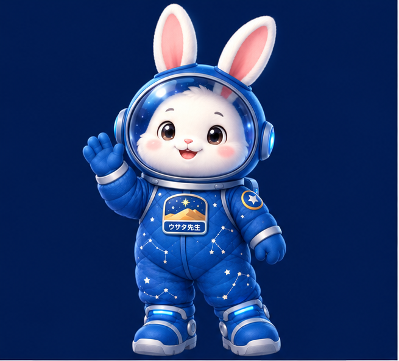

Tottori Star Pocket
鳥取砂丘・馬の背に立ち、夜空を見上げるリアリティ体験。
馬の背から見上げる ✦
‹
✦ Tottori Star Pocket ✦
鳥取砂丘の星空を体験しよう
操作方法のご案内
このアプリでは、2つの操作方法をシーンに合わせて切り替えて使えます。
1
ジャイロセンサー操作
(おすすめ)
スマホの傾きに合わせて、視点が動きます。まるで、実際に夜空を見上げているように星空を体験できます。
使い方
①
ジャイロ操作に切り替える
②
スマホを傾けて、見たい方向を見上げます
2
スワイプ / タッチ操作
画面をスワイプしたり、タップしたりして視点を動かします。細かい調整や、特定の星を探すときに便利です。
使い方
①
スワイプ：上下左右に視点を移動
②
ピンチ：星空の拡大・縮小
③
タップ：星を選択して解説を表示
操作の切り替え
画面右上のボタンから、いつでも操作方法を切り替えられます。
⚙️
ジャイロ操作
⇄
👆
スワイプ操作
⭐
ワンポイント
ジャイロ操作がうまく動かない場合は、画面をタップしてからもう一度お試しください。
どちらの操作でも、右上の「かざす」ボタン等で方向をリセットできます。
安心してお使いいただけるよう、個人情報の取得は行いません。
星空を見に行く
›
🪐 観測時間:
🕒 変更
----/--/-- --:--
🧭
北 (N)
|
高度: 20°
📱
かざす
🕒 観測時間を変更（プレビュー）
⚡ 現在時刻 (LIVE)
🌙 今夜 20:00
🌌 今夜 22:00
✨ 深夜 02:00
織姫星 (ベガ)
1等星 / 約25光年
こと座の最光星。夏の大三角を形作る美しく明るい星です。
ウサタ先生に聞いてみる
ウサタ先生 AI
閉じる

ウサタ先生
AI
星空のことなら、なんでも聞いてね！
✦ よくある質問
⭐️ ベガってどんな星？
➔
🌌 今夜見える星座はどれ？
➔
🧭 星の見つけ方のコツは？
➔
🐪 鳥取の星空の特徴は？
➔
こんにちは！ウサタ先生だぞ！⭐️
気になった星や星座、鳥取の星空についてなんでも質問してね！
送信
🔍 星を探す
閉じる
すべて
1等星
星座
⚙️ 設定
閉じる
📱 「かざす」回転感度
端末を傾けたときのカメラの動きやすさを調整
3
1 (マイルド)
10 (高感度)
📐 視界モード（可動域設定）
砂丘の現地体験か、360度自由な探索かを選択
🐪 砂丘リアル (180°制限)
🌌 360° 自由観測 (制限なし)
プラネタリウム枠（ガイド）
画面中央の円枠や度数ガイドを表示
星座線の表示
オリオン座や夏・冬の大三角などの結び線を表示
星空の微動自転
時間の経過に合わせて星空を自動回転
アプリ情報
Tottori Star Pocket v58.0.0 (Gemini 3.8 Flash 最適化版)
Powered by Gemini 3.8 Flash & Three.js
🌌
観測
🔍
星を探す
ウサタ先生
⚙️
設定